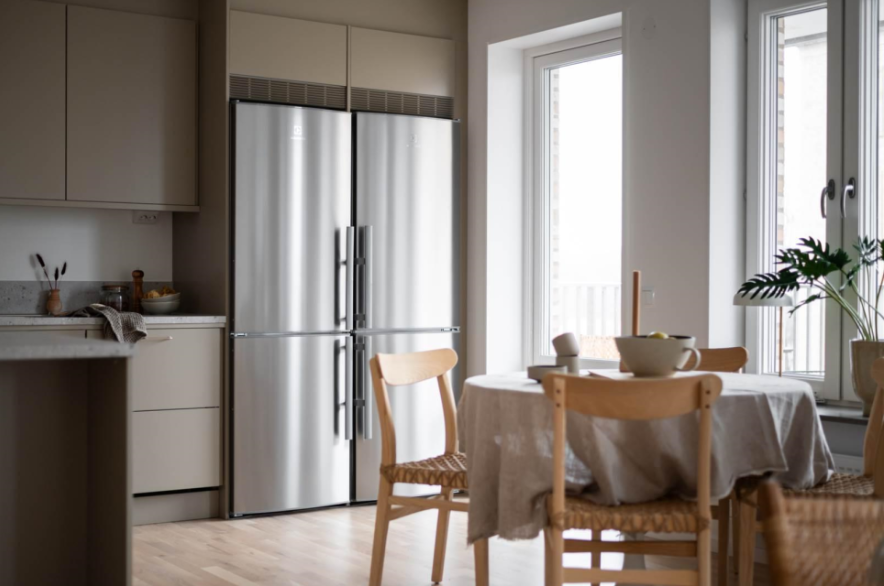
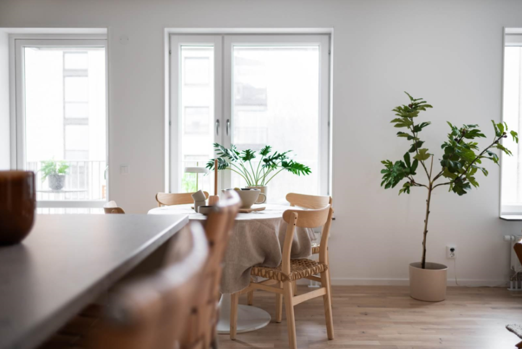
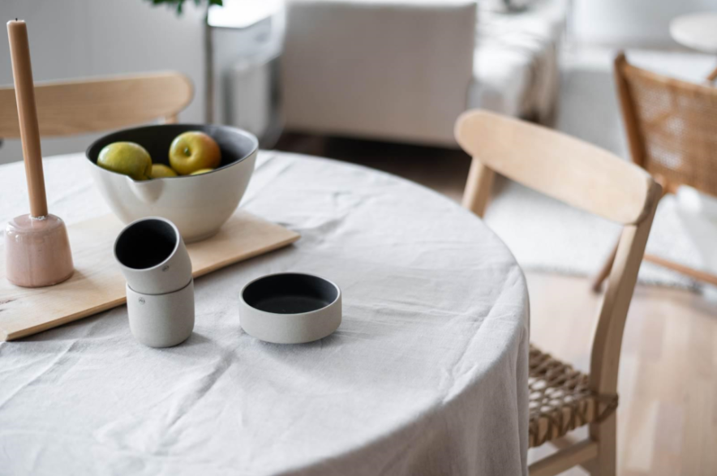

그레이 컬러의 빌트인 수납장과 주방 아일랜드 식탁,
그리고 창가 쪽으로는 원형 식탁이 자리한 고급스러운 소재로
시공된 주방입니다.
4도어의 냉장고 오븐이나 전자레인지를 깔끔하게 수납할수있는
싱크대 등 전체적으로 넉넉한 주방입니다.
아일랜드 주방 식탁 뒤에는 높이에 맞는 스툴 의자를 배치하고,
의자의 등받이가 색감이 같은 주방 식탁등으로
포인트를 주었습니다.
대리석 상판과 그레이 컬러의 고급스러운 느낌이 들어요.
색감 자체도 차분한 분위기를 연출하고 있지만 의자의 등받이나
식탁등으로 포인트를 주어 시선을 끌고 있습니다.



창가 쪽으로는 별도의 원형 식탁이 자리하고 있어 다채롭게 활용이 가능해요.